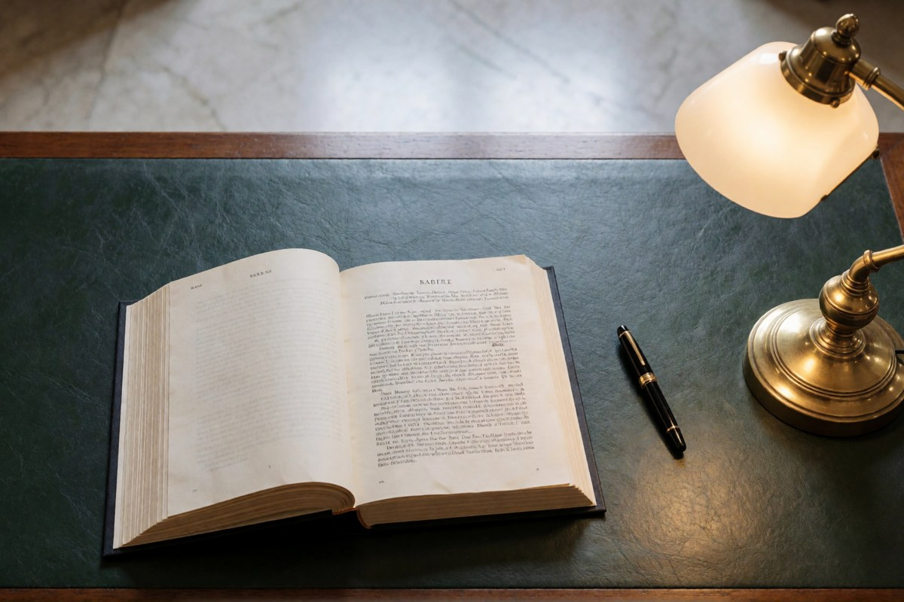

Cronaca · 18 novembre 2026
De Gennaro, la gip: comportamenti opachi ma non su via D'Amelio

Le 133 pagine con cui la giudice di Caltanissetta ha negato l'arresto dell'ex capo della Polizia dicono che lo scopo era un altro: non le indagini sulla strage, ma una vecchia storia del 1989. I pm hanno fatto appello.
di Franco Zanghì
Gianni De Gennaro era preoccupato, e su questo la giudice dà ragione ai pubblici ministeri. Ma non per le indagini sulle stragi del 1992. È il cuore delle 133 pagine con cui la giudice per le indagini preliminari di Caltanissetta ha detto no all'arresto dell'ex capo della Polizia. Le motivazioni sono state rese note martedì 17 novembre e sono state raccontate il giorno dopo dal Corriere della Sera, da Repubblica e dal Fatto Quotidiano.
Che cosa dice la giudice
La gip concorda con la Procura sui comportamenti opachi di De Gennaro, che avrebbe voluto tenere nascosto agli inquirenti qualcosa che lo riguardava non come privato cittadino, ma come pubblico ufficiale. Lo scopo, però, per la giudice era un altro: non inquinare le indagini su via D'Amelio, ma evitare che si tornasse a scavare nell'arresto del collaboratore di giustizia Salvatore Contorno, in Sicilia, nel 1989.
Il Corriere della Sera riporta un passaggio: per la gip non ci sono gravi indizi che quelle mosse «siano state finalizzate a sviare le investigazioni» sulla bomba che uccise Paolo Borsellino e cinque agenti della scorta. La giudice cita anche un'intercettazione del novembre 2025, uno sfogo in cui De Gennaro, scrive, sembra non avere nulla da temere dalle indagini di Caltanissetta. Nello stesso provvedimento, riferisce il Fatto Quotidiano, la gip scrive però che l'inchiesta ha aperto «nuove prospettive» sul contesto e sulla possibile «cabina di regia» dietro le stragi del 1992.
Una partita che non è chiusa
La stessa giudice scrive che il quadro può cambiare, se dal materiale sequestrato e dagli interrogatori dei prossimi giorni usciranno elementi nuovi. L'inchiesta si allarga: a De Gennaro vengono contestati anche la ricettazione e il favoreggiamento aggravati, gli stessi reati contestati alla moglie e alla figlia dell'allora capo della Squadra mobile di Palermo, che secondo i pubblici ministeri avrebbero custodito l'agenda rossa di Borsellino. I domiciliari erano stati chiesti anche per l'ex ispettore Francesco Pacetto e per lo stesso Contorno, mentre per un'agente dei servizi la richiesta era di carcere. I pm hanno fatto appello al Tribunale del Riesame, e De Gennaro, secondo il Fatto, sarà interrogato il 1° dicembre.
Repubblica aggiunge un capitolo: i pubblici ministeri contestano a De Gennaro anche di aver influenzato la nomina del fratello Andrea ai vertici della Guardia di finanza, di cui è diventato comandante generale nel maggio 2023 su nomina del governo. In un'intercettazione riportata dal quotidiano, il fratello, in corsa per l'incarico, lo sollecitava a parlare con «il tuo omonimo», Gianni Letta, e la risposta era: «Lo vedo domani». È un'ipotesi dell'accusa, tutta da dimostrare: De Gennaro va considerato innocente fino a sentenza definitiva e al momento non risultano dichiarazioni sue, né del fratello, né di Letta.
La politica
Nella commissione Antimafia il Partito democratico parla di «clima tossico», il Movimento 5 Stelle non vede il legame fra la vicenda Contorno e la strage di via D'Amelio, e il centrodestra sostiene che la commissione non debba fermarsi. Il ministro della Giustizia Carlo Nordio ha detto di provare «grande disagio» davanti a inchieste riaperte dopo tanti anni, ma ha definito il lavoro dei magistrati di Caltanissetta «molto rigoroso e serio».
Il punto
Questa ordinanza è una lezione di garantismo, e vale per tutti: una giudice legge le stesse carte dei pm e scrive che i comportamenti sono opachi, ma non provano quello che le si chiede di punire. È il lavoro di un giudice terzo. Non è però un'assoluzione: la gip non ha detto che De Gennaro è innocente, ha detto che oggi non ci sono gravi indizi di depistaggio. E una domanda resta. La stessa giudice, secondo il Corriere, parla dell'urgenza con cui l'ex capo della Polizia voleva mettere al sicuro i suoi archivi riservati: se la preoccupazione era solo una vecchia storia del 1989, non è chiaro che cosa ci fosse di così urgente.
Fonti
- ANSA, le motivazioni della giudice per le indagini preliminari di Caltanissetta, 17 novembre 2026
- Corriere della Sera, i passaggi dell'ordinanza e l'intercettazione del novembre 2025, 18 novembre 2026
- Il Fatto Quotidiano, le «nuove prospettive» sulla possibile cabina di regia dietro le stragi del 1992, 17 novembre 2026
- la Repubblica, la contestazione sulla nomina del fratello al vertice della Guardia di finanza, 18 novembre 2026
- Open, l'avviso di garanzia e il quadro dell'inchiesta, 16 novembre 2026
Indagini preliminari in corso alla data di pubblicazione: la richiesta di misura cautelare è stata respinta, l'appello della Procura al Tribunale del Riesame era pendente e l'interrogatorio dell'indagato era fissato per il 1° dicembre 2026.